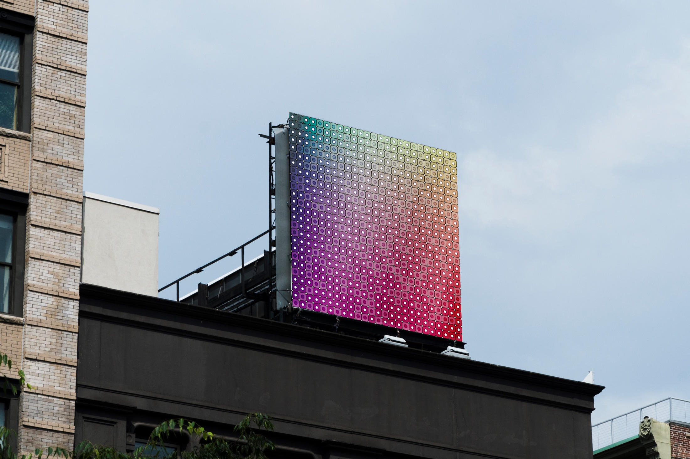
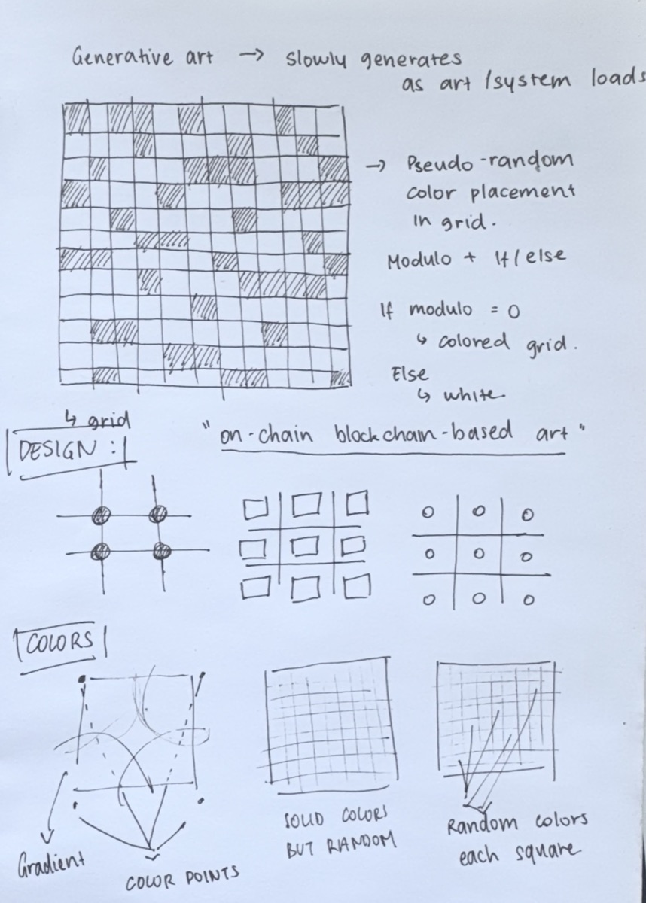
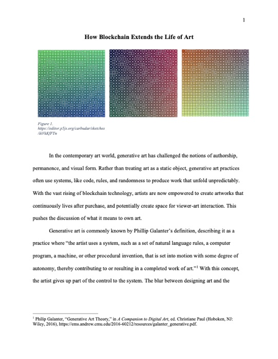

Dot Map
A generative artwork where every mint produces a new, one-of-a-kind map of dots.
WhyCan an artwork keep living after it’s made?
Blockchain lets generative art exist as a living system, not a static object.
Blockchain enables generative artworks to exist as persistent systems rather than static objects, where ownership means possessing access to an algorithm that continuously produces new visual states.
Dot Map was programmed as a way to explore how generative systems and on-chain code might extend the lifespan of an artwork beyond a single static output. Conceived as a conceptual NFT project, the piece investigates how art can behave as a living system through the blockchain infrastructure, allowing each mint to produce a distinct and unexpected visual configuration. This also raises questions about what it means to own and create art within the NFT ecosystem.
How it worksA 25 × 25 grid, a modulo rule, and computational chance.
Order and unpredictability coexist: every output is a snapshot of computational chance.
Dot Map is a long-form generative artwork that uses a JavaScript algorithm to create a 25 × 25 matrix, placing colours in random circles within the squares. It explores how pseudo-randomness, structure and computation collaborate to create uniqueness.
Using the modulo operator, each circle is assigned a random number. The system decides which circles in the grid become coloured and which stay white. This rule creates a pattern that feels random while still following a consistent logic.
Every generated Dot Map becomes a snapshot of computational chance. Instead of a fixed output, Dot Map embraces the variation within the pattern. With the pre-determined parameters, the artwork lets order and unpredictability coexist, inviting viewers to consider the variety of outputs a system can produce.
- Feature
Randomized colour gradient
- Feature
Mouse-hover scaling
- Feature
Time-based rendering sequence
- Feature
Pseudo-random dot placement
- Feature
Source code stored on-chain
- Built with
p5.js
ProcessFrom a sketch to a working generator, one rule at a time.

SketchInitial sketch 
Iteration 1Basic working output: a grid with random colours 
Iteration 2Added dots to the grid 
Iteration 3Integrated a gradient, but the same colours every time
ResultFive mints, five different maps. Make your own below.


Mint your own Dot Map
Each run draws a new map. Hover over it to see the dots scale.
ReflectionWhat making it taught me, plus the essay behind it.
Key learnings
Generative art shifts authorship from artist to structure
Designing Dot Map showed that once parameters are established, the system becomes a co-author. Instead of composing a single final image, the focus becomes crafting constraints that produce consistent variation.
Blockchain reframes ownership as participation
Treating the work as a conceptual NFT highlighted how minting and on-chain generative art turn ownership into access to an evolving system. Collectors become part of the creation, receiving a one-of-a-kind output instead of a static file.
Simple rules can create complex visual behavior
Using modulo-based logic within a fixed grid, I learned how minimal mathematical conditions can generate patterns that feel organic.
Time and interaction change how artwork is perceived
Letting the piece unfold gradually, and stay interactive after completion, showed how duration and viewer input can become central to immersive, unique work.
Read the essay

Open PDF ↗